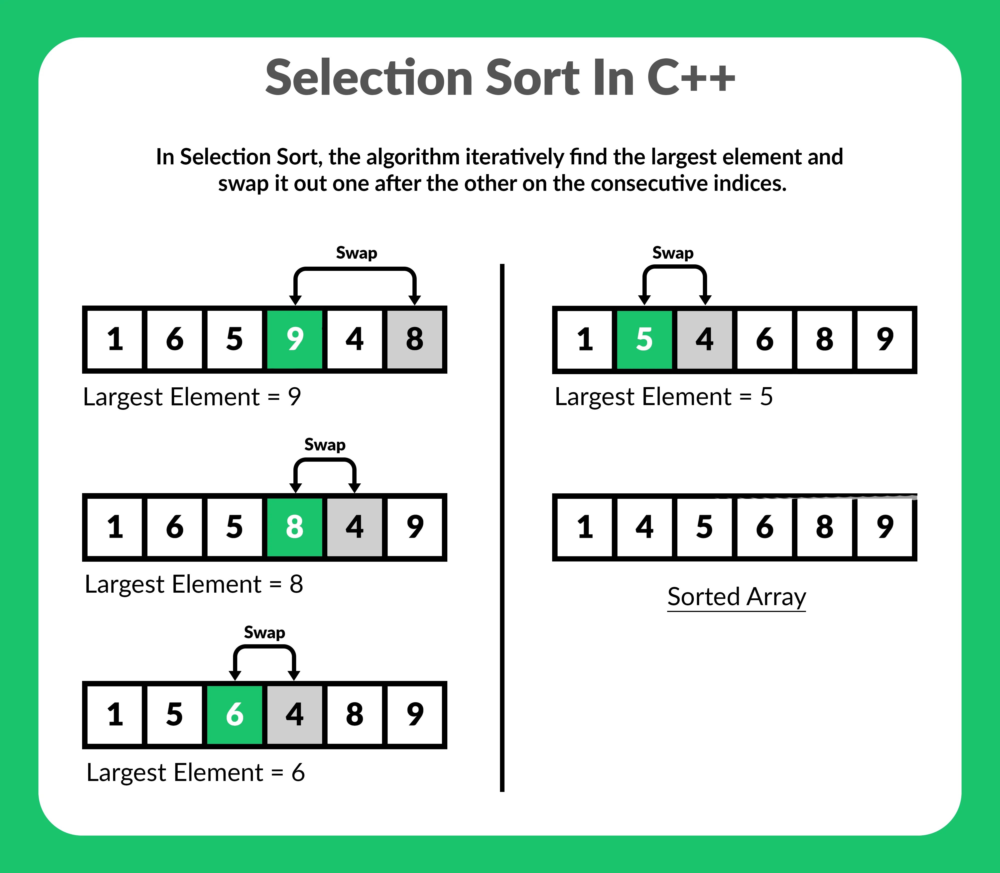
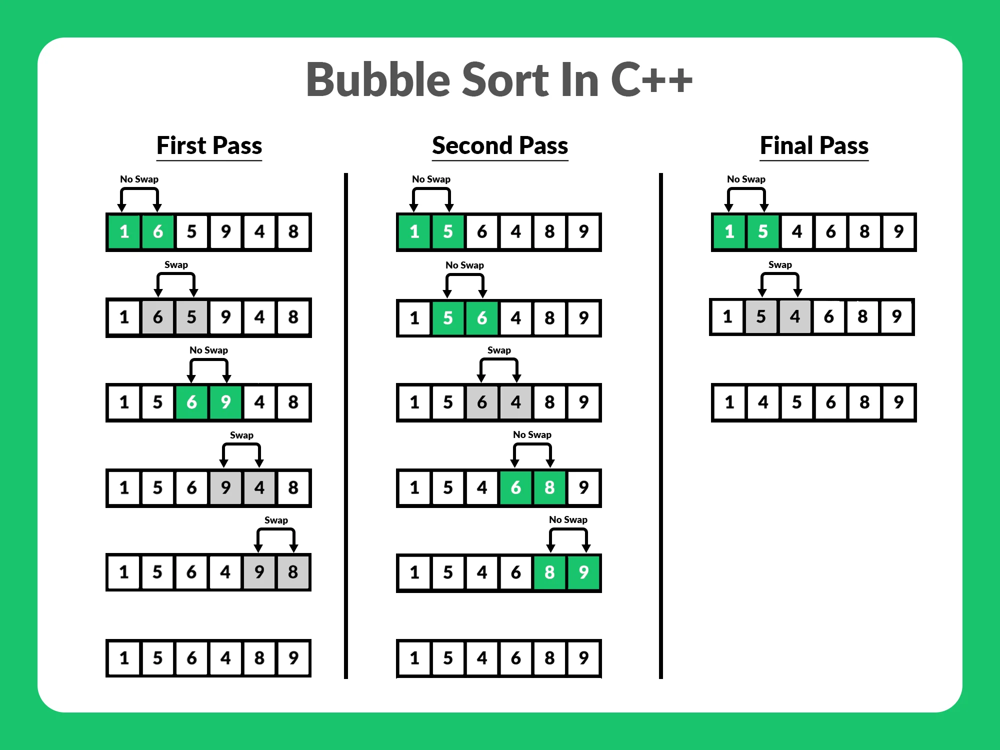
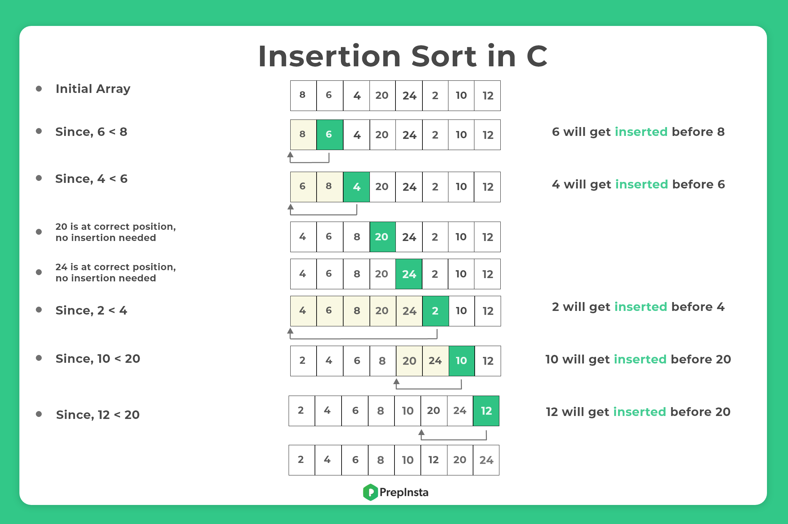
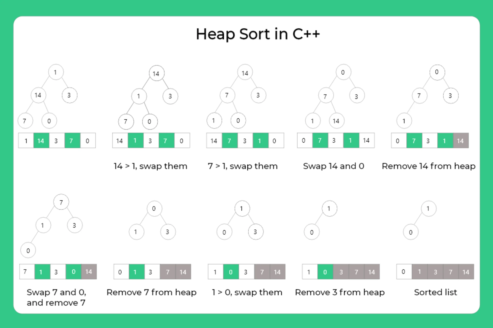

Sorting Bringing Order to the World
◼ Selection Sort
◼ Bubble Sort
◼ Insertion Sort
◼ Merge Sort
◼ Quick Sort
◼ Heap
Selection Sort
The selection sort algorithm sorts an array by repeatedly finding the minimum element
(considering ascending order) from unsorted part and putting it at the beginning.
The algorithm maintains two subarrays in a given array.
1) The subarray which is already sorted.
2) Remaining subarray which is unsorted.
In every iteration of selection sort, the minimum element (considering ascending order) from the unsorted subarray is picked and moved to the sorted subarray.
Following example explains the above steps:

Algorithm
arr[] = 64 25 12 22 11
Find the minimum element in arr[0...4]
and place it at beginning
11 25 12 22 64
Find the minimum element in arr[1...4]
and place it at beginning of arr[1...4]
11 12 25 22 64
Find the minimum element in arr[2...4]
and place it at beginning of arr[2...4]
12 22 25 64
Find the minimum element in arr[3...4]
and place it at beginning of arr[3...4]
11 12 22 25 64

Bubble Sort
Bubble Sort is the simplest sorting algorithm that works by repeatedly swapping the adjacent elements
if they are in wrong order.
Example:
First Pass:
( 5 1 4 2 8 ) –> ( 1 5 4 2 8 ),
Here, algorithm compares the first two elements, and swaps since 5 > 1.
( 1 5 4 2 8 ) –> ( 1 4 5 2 8 ),
Swap since 5 > 4
( 1 4 5 2 8 ) –> ( 1 4 2 5 8 ),
Swap since 5 > 2
( 1 4 2 5 8 ) –> ( 1 4 2 5 8 ),
Now, since these elements are already in order (8 > 5), algorithm does not swap them.
Second Pass:
( 1 4 2 5 8 ) –> ( 1 4 2 5 8 )
( 1 4 2 5 8 ) –> ( 1 2 4 5 8),
Swap since 4 > 2
( 1 2 4 5 8 ) –> ( 1 2 4 5 8 )
(
1 2 4 5 8 ) –> ( 1 2 4 5 8 )
Now, the array is already sorted, but our algorithm does not know if it is completed.
The algorithm needs one whole pass without any swap to know it is sorted.
Third Pass:
( 1 2 4 5 8 ) –> ( 1 2 4 5 8 )
( 1 2 4 5 8 ) –> ( 1 2 4 5 8 )
( 1 2 4 5 8 ) –> ( 1 2 4 5 8 )
(1 2 4 5 8 ) –> ( 1 2 4 5 8 )

Insertion Sort
Insertion sort is a simple sorting algorithm that works similar to the way you sort playing cards in your hands.
The array is virtually split into a sorted and an unsorted part.
Values from the unsorted part are picked and placed at the correct position in the sorted part.
Algorithm
To sort an array of size n in ascending order:
1: Iterate from arr[1] to arr[n] over the array.
2: Compare the current element (key) to its predecessor.
3: If the key element is smaller than its predecessor, compare it to the elements before.
Move the greater elements one position up to make space for the swapped element.

Merge Sort
Like QuickSort, Merge Sort is a Divide and Conquer algorithm.
It divides the input array into two halves, calls itself for the two halves,
and then merges the two sorted halves.
The merge() function is used for merging two halves.
The merge(arr, l, m, r) is a key process that assumes that arr[l..m] and arr[m+1..r] are sorted and merges the two sorted sub-arrays into one.
See the following C implementation for details.
MergeSort(arr[], l, r)
If r > l
1. Find the middle point to divide the array into two halves:
middle m = l+ (r-l)/2
2. Call mergeSort for first half:
Call mergeSort(arr, l, m)
3. Call mergeSort for second half:
Call mergeSort(arr, m+1, r)
4. Merge the two halves sorted in step 2 and 3:
Call merge(arr, l, m, r)

Quick sort
Like Merge Sort, QuickSort is a Divide and Conquer algorithm.
It picks an element as pivot and partitions the given array around the picked pivot.
There are many different versions of quickSort that pick pivot in different ways.
Always pick first element as pivot.
Always pick last element as pivot .
Pick a random element as pivot.
Pick median as pivot.
The key process in quickSort is partition().
Target of partitions is, given an array and an element x of array as pivot, put x at its correct position in sorted array
and put all smaller elements (smaller than x) before x,
and put all greater elements (greater than x) after x. All this should be done in linear time.
Heap Sort
Heap sort is a comparison based sorting technique based on Binary Heap data structure.
It is similar to selection sort where we first find the maximum element and place the maximum element at the end.
We repeat the same process for the remaining elements.
What is Binary Heap?
Let us first define a Complete Binary Tree.
A complete binary tree is a binary tree in which every level, except possibly the last,
is completely filled, and all nodes are as far left as possible
A Binary Heap is a Complete Binary Tree where items are stored in a special order such that value in a parent node is greater(or smaller) than the values in its two children nodes.
The former is called as max heap and the latter is called min-heap.
The heap can be represented by a binary tree or array.
Why array based representation for Binary Heap?
Since a Binary Heap is a Complete Binary Tree, it can be easily represented as an array and the array-based representation is space-efficient.
If the parent node is stored at index I, the left child can be calculated by 2 * I + 1 and right child by 2 * I + 2 (assuming the indexing starts at 0).
Heap Sort Algorithm for sorting in increasing order:
1. Build a max heap from the input data.
2. At this point, the largest item is stored at the root of the heap.
Replace it with the last item of the heap followed by reducing the size of heap by 1.
Finally, heapify the root of the tree.
3. Repeat step 2 while size of heap is greater than 1.
How to build the heap?
Heapify procedure can be applied to a node only if its children nodes are heapified.
So the heapification must be performed in the bottom-up order.
Lets understand with the help of an example:
